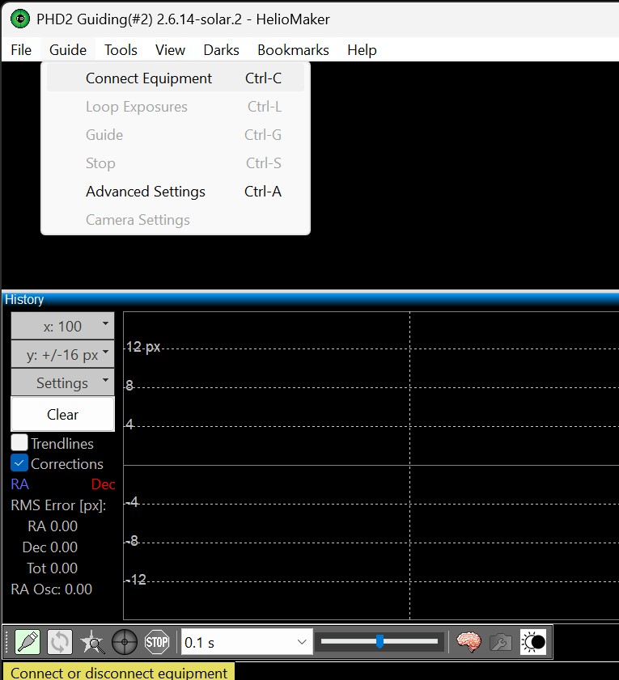
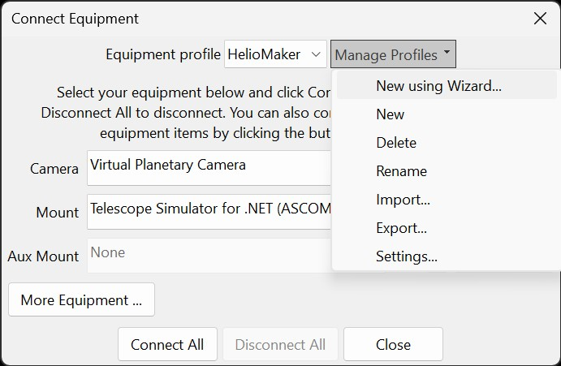

Welcome to the Quick Start guide for the Custom Version of PHD2, designed to work seamlessly with HelioMaker. This guide is tailored for planetary imagers aiming to capture detailed images of the Sun, Moon, and planets. Whether you're new to PHD2 or astrophotography, this chapter will help you set up and start guiding efficiently using the extended version of PHD2.
The custom PHD2 is available for download from this page: PHD2 for Solar, Lunar and Planetary Guiding. Go to the assets section and download the Windows installer package.
The custom version of PHD2 operates similarly to standard PHD2 but adds full-disk/crescent guiding and integration with HelioMaker's detector suite. Standard PHD2 continues to provide stellar guiding. With HelioMaker connected, use Find & Track to select Full Disk/Crescent, Planetary, or Surface Features detection; PHD2 receives the detected target position and converts it into mount corrections. PHD2's own Planetary and Solar Guiding Tool remains available for standalone and fallback full-disk/crescent detection.
To allow HelioMaker to communicate with PHD2, make sure the Enable Server option is checked in the Tools menu of PHD2.
To utilize PHD2 effectively with HelioMaker, you need to configure it with at least one equipment profile. Each profile consists of your camera, mount, and other specialized devices like Adaptive Optics (AO) and an optional Rotator. If you do not use AO or a Rotator, these can be set to None.
There are multiple ways to create a new equipment profile in PHD2:

Configuring the correct camera and mount in your PHD2 equipment profile is essential for seamless integration with HelioMaker.
Using the Virtual Planetary Camera in the PHD2 profile is the recommended configuration for most HelioMaker use cases. This setup allows PHD2 to utilize the main imaging camera from SharpCap Pro for both imaging and guiding, eliminating the need for a separate guiding camera or guidescope.
With the Virtual Planetary Camera, PHD2 can detect and guide on a wide range of targets, including full circular disks or crescent shapes at lower magnifications (or shorter focal lengths) and surface features at higher magnifications (or longer focal lengths). This flexibility makes the use of a dedicated guidescope and guiding camera largely unnecessary, as the main imaging camera ensures precise target stabilization across various scenarios.
A physical camera connected directly to PHD2 is also fully supported. Current versions provide its live frames to Find & Track so HelioMaker can use the same Full Disk/Crescent, Planetary, and Surface Features detectors. Planetary and Surface Features require an active HelioMaker license. If the live integration is unavailable, PHD2 falls back to its built-in detector for that session.
For detailed instructions on camera selection relevant to HelioMaker, please refer to the PHD2 Configuration documentation.
In the PHD2 profile, the mount must always be included as part of the equipment configuration, as PHD2 sends guiding corrections directly to the mount to minimize target drift. Most mounts with ASCOM driver support allow simultaneous connections from multiple clients, enabling both SharpCap and PHD2 to communicate with the mount without conflicts.
It is crucial to ensure that the PHD2 equipment profile used with HelioMaker is configured to use the same mount as SharpCap Pro, which serves as the main imaging application in this setup.
Equipment profiles in PHD2 define your specific setup, including the camera, mount, auxiliary devices, and guiding algorithms. Profiles can be created, managed, and selected from the Connect Equipment dialog, as shown below. In this example, an existing user-defined profile named HelioMaker is displayed, configured with a Virtual Planetary Camera (used for integration with HelioMaker and SharpCap Pro) and the EQMOD ASCOM HEQ5/6 mount.

To create, edit, or manage equipment profiles:
Once a profile is selected, the Camera, Mount, Aux Mount, and other associated devices can be configured. Use the Connect All button to establish connections with all devices listed in the current profile.
Understanding and configuring guiding algorithms is essential for achieving optimal guiding performance. PHD2 allows you to select different guiding algorithms for the Right Ascension (RA) and Declination (Dec) axes, which determine how PHD2 responds to guiding corrections. By default, PHD2 uses the Hysteresis guiding algorithm for the RA axis and ResistSwitch for the Dec axis.
For the best results, consult your mount manufacturer's recommendations or explore relevant astronomical forums, including the PHD2 user forum, to identify the settings that best match your specific mount. If this information is unavailable, using PHD2's default settings is a reliable choice.
Profiles store guiding algorithm selections along with their respective settings for each axis. For example, when using algorithms like Hysteresis, Lowpass2, and ResistSwitch, the settings saved in each profile include parameters such as Aggression, Hysteresis, Min Motion, and Max Pulse Duration, among others.
Default settings are suitable for most scenarios but can be fine-tuned for better results. For further guidance, refer to the PHD2 Advanced Settings documentation, and PHD2 User Guide, as well as other relevant resources.
If unfamiliar with guiding algorithms and their associated settings, leaving the default values is recommended as a starting point, and when you gain more experience, you can adjust these settings to optimize guiding performance. Here are some key parameters to consider:
Note: The default selection of guiding algorithms and associated settings is a good starting point. However, to optimize guiding results, users are encouraged to learn more about these settings and understand their purposes. This knowledge will empower you to troubleshoot and solve guiding issues as they arise.
For further guidance, refer to the PHD2 Best Practices document, participate in user forums, watch instructional videos, and explore other related resources.
PHD2 Calibration is a required step to ensure accurate guiding. During calibration, PHD2 measures how the mount responds to guiding commands in both RA and DEC axes. These measurements allow PHD2 to compute the correct guiding pulses to minimize target drift effectively.
For a seamless experience, HelioMaker can handle the calibration process automatically. By enabling the Calibrate at Start of Sequence option in HelioMaker, calibration will be initiated automatically at the beginning of a sequence, saving time and effort. For detailed steps on using this feature, refer to the Recommended Workflow - PHD2 Calibration section. When calibration is started from HelioMaker, the PHD2 Calibration Pre-flight Dialog is shown first so the calibration target and declination source can be confirmed.
If you prefer to take full control of the calibration process, you can disable the Calibrate at Start of Sequence option in HelioMaker. This allows you to manually initiate and monitor calibration directly from PHD2. There are several methods available in PHD2 to perform calibration, including the Begin Guiding button pressed while holding down the Shift key, or through the Tools menu. PHD2 tools such as Calibration Assistant and Manual Guide provide additional options for calibration. The PHD2 documentation and online materials provides detailed instructions on manual calibration procedures.
Regardless of whether PHD2 calibration is performed via HelioMaker or directly from PHD2, it is essential to enter the correct effective focal length in HelioMaker's main screen. This value is critical for PHD2 to create accurate calibration data for optimal guiding results. For detailed instructions on setting the focal length, refer to the Main Screen - Focal Length section.
Proper calibration is essential for guiding accuracy. It is particularly critical if you make any changes to your imaging setup, such as rotating the camera, adjusting the mount, or switching equipment profiles. Always ensure calibration is performed correctly for optimal guiding performance.
During the calibration process, HelioMaker displays detailed progress information in the status area. If calibration completes successfully, the resulting PHD2 Calibration Graph will appear in the Session area, providing a visual assessment of calibration quality. If calibration fails or shows unacceptable orthogonality errors, refer to the troubleshooting section for guidance. The PHD2 Calibration Graph can also be accessed directly in PHD2 from the Tools menu or by using the Alt-C shortcut.
The Planetary and Solar Guiding Tool is a specialized set of features and algorithms designed to enable guiding on larger celestial bodies, such as the Sun, Moon, and planets, rather than pinpoint light sources like stars. This tool can be accessed in the following ways:
To ensure a smooth and successful guiding experience, consider the following tips:
Additionally, make use of the following resources to enhance your guiding setup and performance: